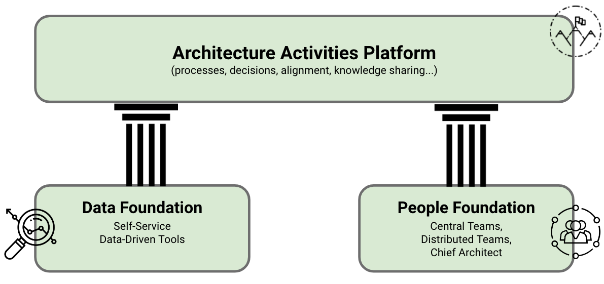
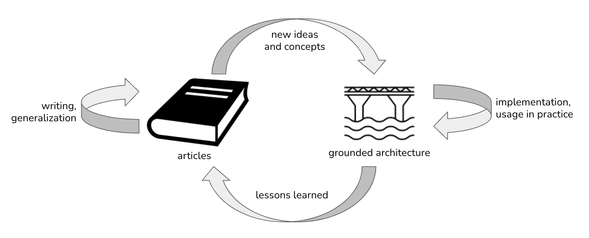
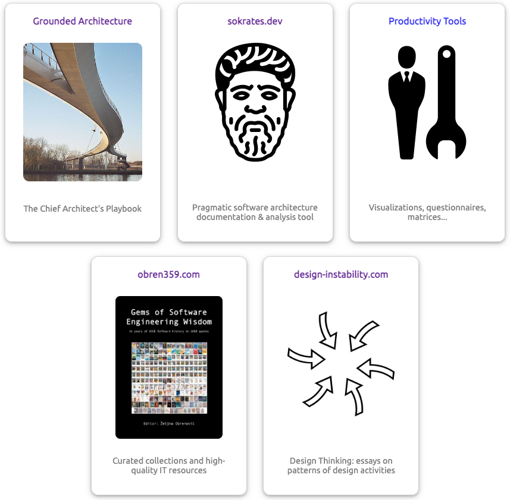

Introduction
IN THIS SECTION, YOU WILL: Understand what this book is about and how to use it.
KEY POINTS:
- This book will share my approach to running an IT architecture practice in larger organizations based on my experience at AVIV Group, eBay Classifieds, and Adevinta. I call this approach “Grounded Architecture”—architecture with strong foundations and deep roots.
- Prioritizing people interactions and data over processes and tools, Grounded Architecture aims to connect an architecture practice to all organizational levels as an antidote to the “ivory tower” architecture.
- I also explain my motivation to write this book.
Have you ever wondered how to run an IT architecture practice without feeling stuck in an ivory tower? Look no further! This book will share an approach to running an IT architecture practice in larger organizations based on my experience at AVIV Group, eBay Classifieds, and Adevinta. I call it “Grounded Architecture”—because it’s all about having your feet on the ground and your architecture firmly planted in reality.
The approach presented in this book connects architecture to every nook and cranny of your organization, making sure you’re not a lone wizard in a tower casting spells that no one understands. Grounded Architecture prioritizes connections with people and data over fancy theories, processes, and tools. The books will offer you new insight into IT architecture, redefining it as an adaptable and outcome-oriented practice.
The name “Grounded Architecture” is a hat-tip to the Grounded Theory methodology. Grounded Theory is about developing theories from the data you gather from the real world rather than pulling them out of thin air. Likewise, Grounded Architecture evolves from honest feedback and data, not from dusty old books of abstract principles.
Grounded Architecture Overview
This book breaks down Grounded Architecture into two main parts (Figure 1):
- Framework: The nuts and bolts you need to get your Grounded Architecture practice up and running.
- Guiding Principles: Handy tips and inspirations to help you bring these ideas to life.
 Figure 1: Grounded Architecture Overview.
Grounded Architecture framework consists of three elements:
Lightweight Architectural Analytics keeps your architecture decisions based on up-to-date and complete information about your organization’s tech landscape.
Collaborative Networks represents a strong network of people working on architecture across your organization, ensuring your efforts make a difference.
Lastly, the sections Operating Model: General Principles, Cooperation-Based Operating Model, and IT Governance: Nudge, Taxation, Mandates define a collection of processes and agreements that lets architects do their thing, leveraging data and people connections to create a powerful, organization-wide impact.
As part of my Grounded Architecture quest, I’ve devised several guiding principles and tools to help you sprinkle Grounded Architecture magic in your practice. While traditional IT architecture literature often zeros in on technical know-how, this collection dares you to think differently about IT architecture and to dive into the rich insights of social, behavioral, and management sciences. These resources are grouped into several parts and are sure to make your journey both insightful and entertaining:
If all this is not enough, in the online appendix I outline several resources that have proven vital in my journey as an IT architect. I routinely refer back to them and carry them in my practitioner “backpack,” so I added their summaries in the online appendix, including:
- Favorite Quotes
- Bookshelf
- Resources for Managing, Growing, and Hiring Architects
- Resources for Effective Communication
- Resources for Working With Toxic Colleagues
- Resources for Dealing With Scapegoating at Work
- EIC/ISO 25010 Standard
- Cloud Design Patterns
The rest of this book will explain the Grounded Architecture approach in detail. In this section, I want to share a few things about my motivation to write this book.
What Will You Learn?
This books serves as a guideline to build and operate a robust IT architecture practice, ensuring alignment with organizational goals while adapting to the challenges of modern IT environments.
Key Topics
The book will provide you with tips and inspirations about work that you need to set up and run a modern IT architecture practice, including:
- Create organizational and technical structures to support IT architecture work,
- Define IT architecture roles and responsibilities, skills, and career paths,
- Operate an effective IT architecture practice in complex multicultural organizations.
I also provide a number of other ad-hoc lessons and inspirations from my work.
Format
I have organized my lessons and insights in a form that, if you recognize the problems and are inspired by solutions, could use as a high-level “playbook” about how to work as an architect or run an architecture practice. I also provide more concrete tips on each discussed topic, finishing each section with questions you should consider when addressing these topics.
I invite you to read this book from beginning to end, following the progression from data and basic structures to management and organizational topics. However, you can also browse the text and start reading whatever interests you. I use many illustrations to create easy-to-remember pictures that you can associate with discussed topics, making the book usable across your organization as a coffee table book, serving as an inspiration, or sparking discussions.
Content
This book is not technical. We will not discuss the details of public cloud design patterns, security, reliability, how to optimize computer loads, or select the proper data storage. As a modern architect, you will need these skills, but there are already many great resources. This book is about expanding your horizons to apply your technical skills in complex organizations. You can broaden your horizons as a head or manager of architects and organize and support architects to use their technical skills more effectively as a team.
Is This A Proven Method?
Like with many similar books, you may be disappointed if you are looking for a scientifically proven “method” of running a modern an architecture practice. This book is personal and opinionated, building on my daily experiences as an architect and head of an architecture practice. While subjective, this book can provide valuable insights for IT architects, their managers, and people working with architects. I have successfully applied my approach in three different companies, which gives it some generality and repeatability.
I invite others to share the lessons they have learned similarly. Even if opinionated and limited in scope, such practical reflections based on concrete examples have much more value for practitioners than abstract debates, formal methods, or academic analyses.
Who Should Read This Book?
When writing this book, I had a broad audience in mind. The articles should be helpful to both technical and non-technical people. The book can help IT architects better understand their value and place in a broader organization. I also hope the articles show the wider audience the benefits of staying close to and well-connected with architects.
Applying Ideas In Practice
I approach designing an architecture practice in complex organizations as an art of cooking. A modern IT architecture practice is like a master chef’s kitchen. As you will always work with many local ingredients, you can’t just copy a recipe from one restaurant to another and expect it to taste the same.
This book shares some tasty tips and savory secrets on “cooking” up a thriving an architecture practice. But remember, every kitchen is different. Some ingredients and recipes are essential, while others might be left on the shelf. And don’t be surprised if you need to add a pinch of something special from other sources to spice things up.
When I start an architecture practice, I see myself as a chef stepping into a new restaurant with a suitcase full of favorite spices. I blend in core preferred elements and foundational frameworks like a chef using their trusty spices and kitchen tools. But the authentic flavor—the magic that makes a dish unforgettable—comes from the local ingredients. In an organization, these local ingredients are the people: the in-house talent and culture that give the enterprise its unique taste.
While fundamental structures and practices may be consistent across diverse businesses, the most crucial elements—akin to fresh, local ingredients in cooking—you must procure locally. The staff’s skills, experiences, and insights are the secret ingredients that personalize and refine the architecture to align with specific business needs and goals. They are what render the architecture truly unique and effective.
Key Influences
The Grounded Architecture approach also builds on many ideas that others have successfully used. Gregor Hohpe’s Architecture Elevator view of architecture has heavily inspired my work. In many ways, my work reflects the lessons learned from implementing Gregor’s ideas in practice. Gregor described modern architects’ functions as aligning organization and technology, reducing friction, and charting transformation journeys. Such modern architects ride the Architect Elevator from the penthouse, where the business strategy is set, to the engine room, where engineers implement enabling technologies.
In my quest to define modern architectural roles, I used Staff+ Engineering jobs as an inspiration for the development of architects. Tanya Reilly’s book The Staff Engineer’s Path and Will Larson’s book Staff Engineer: Leadership beyond the management track are helpful guides in defining the responsibilities of modern architects. Overall, the Staff-plus engineering roles provide excellent examples for the development of architects.
Many other sources have influenced my work. You can find them in the online Bookshelf appendix.
Why This Book?
This book generalizes my experiences in written form. I have written these articles for several reasons. Firstly, writing helps me clarify and improve my ideas (Figure 2). As Gregor Hohpe once noted, every sentence you write frees up brain cells to learn new things.
 Figure 2: Writing a book helped me organize ideas, obtain new insights, improve principles and tools, and share the lessons learned.
I also needed this book for the education of architects and to increase awareness about modern an architecture practices in organizations I worked in. Having written content can significantly help to spread the message. As nicely described by Hohpe written word has distinct advantages over the spoken word:
- it scales: you can address a broad audience without gathering them all in one (virtual) room at the same time
- it’s fast to process: people read 2-3 times faster than they can listen
- it can be easily searched or versioned.
Lastly, by generalizing and putting my experiences on paper, I aim to create more usable materials to help others in similar situations. I also expect helpful feedback from a broader community.
A Part of the Bigger Picture: A Trilogy in Four Parts
This book is a part of the collection of open-source tools and resources I have built to help me in architectural work (Figure 3).
 Figure 3: Grounded Architecture is a part of the collection of open-source tools and resources I have built in the past ten years to help me in architectural work.
The other resources include:
- Sokrates: an open-source polyglot source code analysis tool. Sokrates provides a pragmatic, inexpensive way to extract rich data from source code repositories. Sokrates can help you understand your code by making the size, complexity, and coupling of software, people interactions, and team topologies visible.
- Productivity Tools: A collection of more than 100 online tools I built to help me in my daily work.
- 359° Overview of Tech Trends is my collection of knowledge resources with podcasts and videos from over 20 authoritative, high-quality sources (IEEE, ACM, GOTO Conf, SE Radio, Martin Fowler’s site, Ph.D. Theses). Architects need to learn fast, and finding good knowledge sources is difficult.
You can find more details about these tools on my homepage obren.io.
A Bit of Personal History
The work presented in this book builds on several years of my experience. Most of this work originates from my current work as a Chief Architect at AVIV Group and previous works as a Principal Architect for eBay Classifieds and Adevinta.
Another vital part of my experience that shaped this book was my earlier experience as a consultant and analyst at the Software Improvement Group, where I’ve learned the value and pragmatics of data-informed decision-making. As a spin-off of this work, I’ve also built a tool called Sokrates, which enables efficient and pragmatic extraction of data about technology and organization from source code. This work has directly influenced my view of Lightweight Architectural Analytics part of the Grounded Architecture framework.
My experience as a CTO of Incision, a startup, has helped me better understand the challenges of creating and running an IT organization.
My experience as a researcher at Dutch Center for Computer Science and Mathematics (CWI) and Eindhoven Technical University (TU/e) provided me with a valuable background to do rigorous data analyses and research. From this research period, I want to highlight a collection of essays, Design Instability, that I co-authored with Erik Stolterman, where we connected experiences of designing/architecting in three disciplines: classical design, UX design, and software engineering. This work has helped me better relate to and learn from non-technical fields, a vital part of IT architects’ job.
Lastly, my hands-on experience as a software developer has proven invaluable for my work as an architect.
The Structure of the Book
I have organized the book into several main parts. In the introductory part, I describe the context in which my ideas have developed.
In the second part, I discuss the Grounded Architecture framework and describe its three elements: Lightweight Architectural Analytics, Collaborative Networks, and the Operating Model.
In the third part, I discuss the Guiding Principles of Grounded Architecture, grouped into several sub-parts: On Being an Architect, On Soft Skills, On Decision-Making, On Human Complexity, and On Execution and Governance.
Finally, I conclude with a summary and encourage you to explore further with the help of the plentiful external resources I’ve provided.
Stay Connected
You can find additional resources online at:
Feel free to follow me on LinkedIn to see what I am up to:
Acknowledgments
I want to thank all AVIV Group’s Architecture Center of Excellence members and eBay Classifieds Virtual Architecture Team (VAT) members, who gave me invaluable feedback and discussions. Lastly, thank Peter Maas and Brent McLean for sponsoring and pushing for the development of data-informed architecture in our organizations.
The cover image is a photo of Nesciobrug. Credit: the botster, CC BY-SA 2.0, via Wikimedia Commons.
{kind=link}
Introduction Context: Fast-Moving Global Organizations → |